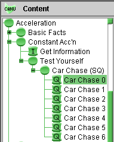

The acceleration of the police cruiser is constant in time, and that of the car is also constant but equal to zero.
Therefore the velocity of the cruiser increases linearly in time from zero, and that of the car remains constant.
The displacement of the car increases linearly in time and that of the cruiser increases with t2.
Continue with Question "Car Chase (SQ)/Car Chase 1".
To simplify navigation to "Car Chase 1" and subsequent questions in the Car Chase question sequence, the Tree Navigation mode is more convenient. In this mode, the navigation panel on the left looks as shown below when you are on Question "Car Chase 0" of the Car Chase question sequence:

To select the Tree Navigation mode, select "Navigation" from the Content menu, and then select "Tree".
To continue with the Car Chase question sequence, select "Car Chase 1" from the Navigation tree.